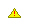
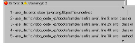
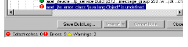

Analyzing Model Build Output
The first time you build a model, watch the model build log output and make sure it is progressing well. If there are serious errors, interrupt the build, correct the problem, then resume the model build. Serious errors are all errors except parse and preprocessor errors.
The following table describes the message types that may appear during a model build:
|
Icon
|
Description
|
|

|
Information message.
No action should be taken.
|
|

|
Warning message.
Something went wrong during the build that should be examined after the model is built.
|
|
|
Error message.
An error occurred during building (i.e. a compilation problem), but it will not prevent the build from continuing.
|
|
|
Catastrophic error message.
A serious error occurred that prevented the model from building. The error must be resolved.
|
Build log messages appear in a tree diagram, allowing you to expand and collapse the detailed messages that appear for each stage of the build. Messages related to the processing of each compiled file appear in the processing units branch. For parallel parsing, each parse process appears in a different branch of the tree.
Note: For Java source code, the parser runs on groups of compiled files, not individual files.
At the bottom of the Model Build Information panel, clicking an error icon () displays a numbered list of errors that occurred during the build.

From the error list, selecting an error highlights the error in the Model Build Details.

To assist you in identifying errors and their causes, the model build log displays the following:
• all files and parse errors that occurred in them
• all files that did not get built into the model, either because the file reached a parse error limit or had a catastrophic error
• all files that had parse errors in them
• all files that are part of your sharedSrcRoot, but are not used or called in your source code